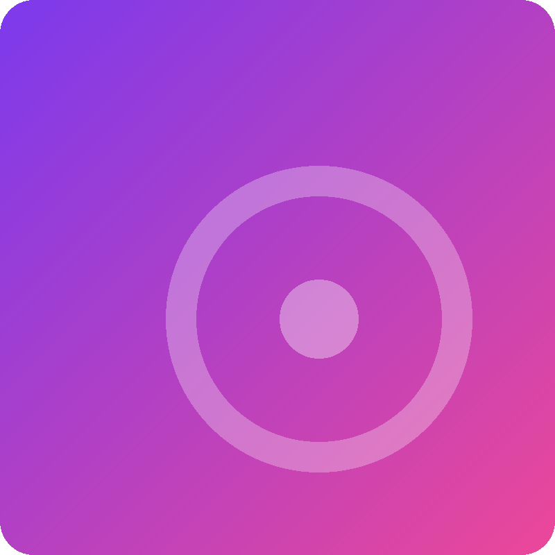

Verão de Neon
Lumen Park
★ 4,8Sound Shelf
@usuario
Apaixonado por música, descobrindo novos sons e organizando tudo que estou ouvindo.
Músicas que você avaliou recentemente.

Lumen Park
★ 4,8Aurora Vale
★ 4,3Os Faróis
★ 4,7Arca Lunar
★ 4,1Neon Coast
★ 3,9Distribuição dos gêneros das músicas que você avaliou.
As músicas que receberam suas melhores avaliações.
Uma coleção escolhida para aparecer no seu perfil.
Músicas, álbuns e artistas que já avaliei.
Lumen Park
★ 4,8Uma das minhas músicas favoritas.
Ver detalhesAurora Vale
★ 4,3Álbum que descobri recentemente.
Ver detalhesOs Faróis
★ 4,7Uma música que merece voltar à minha playlist.
Ver detalhesColeções de músicas organizadas por você.
As músicas que mais gostei durante o ano.
12 músicas Ver coleçãoMúsicas para ouvir com tranquilidade.
8 músicas Ver coleçãoArtistas e músicas que encontrei recentemente.
15 músicas Ver coleção